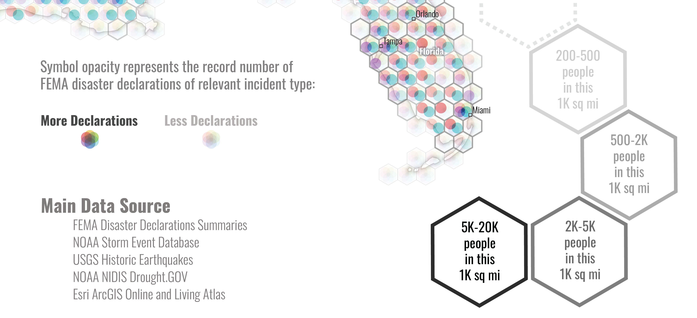

United States of Natural Disasters
Best Cartography Award, Most Innovative Map in Esri UC 2024;
Runner-Up
in Thematic Map and Keynotes Choice in WLIA
2024; Featured on "maps.com";
Runner-Up (Highly Commended) in 2024 BCS Thematic
Mapping
Award
 View Full Image
View Full Image
This map presents an innovative and comprehensive visualization of U.S. natural
disasters of various types, allowing the map readers to acquire information from
both overview and spatial-semantic specific perspectives.
The major eye-catching element in this map would be the multivariate symbol design.
To evenly divide the space with rooms for multiple visual vehicles, the hexagon unit
is chosen, which also balances the functionality and aesthetics. The general idea is
to split each hexagon unit into 6 parts (or 7, including the central one),
associated with different color hue all around the color wheel. Due to the natural
of different colors, the lightness (HSL) or value (HSV) are carefully controlled to
minimize the other potential variations as visual variable.
There is arguably barely perfect solution to arrange 6 or 7 natural disaster types
in the order of color wheel spectrum, but efforts are still made to maximize the
potential cognitive association. For example, red color for wildfire, yellow for
drought, blue for hurricane; while flood appears at the bottom, earthquake comes
from the core, etc.
The design inspiration actually comes from the old printing effect, such as the dots
in “halftone”. In CMYK printing, especially those in worse quality, we can still see
the colorful dots when close enough. But if we take a step back, the dots work
organically to display an image. Therefore, I originally evenly filled 7 round
shapes in each hexagon without any overlapping. It turned out though individual
values are clear to get, the overall visual effect tends to be grayed out too much.
I kept exploring from this side (no overlapping), all the way to the opposite side
(entire overlapping of 7 round shapes) which leads to a much clear overall pattern
but no way to retrieve individual variables. After many tests in printed version, I
got the current configuration with partial overlapping, keeping a good balance
between a clear overall pattern and capability of individual variable retrieval.
With major designs highly relying on color-hue (even the entire color wheel), this
map is probably not targeting at communities with color blindness. Even if there
seems not to be a perfect solution for that, all relevant feedback is highly
welcomed.

Besides the color (hue), the opacity of each sub-symbol also variates from full to
half, representing the record number from FEMA disaster declarations of relevant
disaster type. To better understand the social effect of the natural disasters, the
population density is illustrated in different shade levels of hexagon edges.
Additionally, the univariate maps are also provided on the left side for further
exploration.
The statistical units in 1000 sq mile hexagon are generated under North America
Albers equivalent projection, targeting at presenting both the contiguous part and
two outside states. Some computing strategies are applied during the data processing
procedure of disaster related variables and the population density. Though the data
processing and analytics are much less important than the efforts on symbol design,
everything is seriously treated as expected.
Major data source: FEMA disaster declaration summaries, NOAA storm event database,
USGS historic earthquakes, NOAA NIDIS Drought.GOV, Esri ArcGIS Online and Living
Atlas.
In March 2024, This map won the Runner-Up (2nd place) of Thematic Map, and Keynotes'
Choice in Wisconsin Land Information Association (WLIA) 2024 Map
Contest, and is featured in news by UW-Madison Geography Department.
In July 2024, this map won the Best Cartography Award (the only one), and the 1st place of "Most Innovative Map" in Esri User Conference 2024. Check it out from the Virtual Map Gallery and the Map Gallery Award Winners.

"MAPS.COM" is a website owned and supported by Esri. It highlights interesting, impactful, and beautiful maps that help people better understand the world. In late July 2024, this map is featured on "maps.com" in "Living Planet" Section: https://www.maps.com/the-united-states-of-natural-disasters/, and is compiled into Volume 1, Issue 4.
In September 2024, this map won the Highly Commended Award of Collins
Bartholomew Award for Thematic Mapping & Infographics, by British
Cartographic
Society.
A printed version of this map will be displayed in the Map Gallery of North American Cartographic Information Society 2024 Annual Conference at Tacoma, Washington.